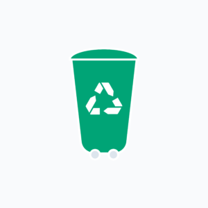
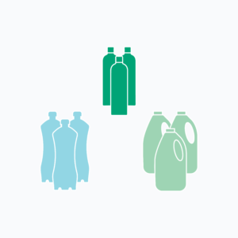
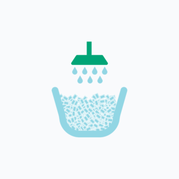
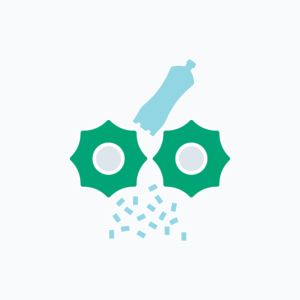
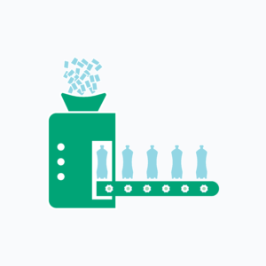
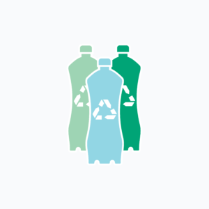

The first step involves collecting post-consumer materials from various sources, which can be done by local governments or private companies.
Sorting is crucial as different types of plastic need to be separated. This is usually done by machines at recycling plants.
Washing removes impurities like labels, adhesives, dirt, and food residue, which is essential for quality recycling.
Shredding breaks down plastics into smaller pieces, which can be used for other applications without further processing.
Plastic pieces are tested and segregated based on density and quality to ensure proper recycling.
The final step transforms shredded plastic particles into a usable product for manufacturers.
